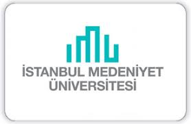
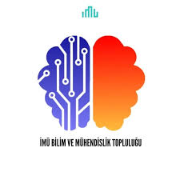

|
Ben Eda Zeynep Acar. Nişantaşı Nuri Akın Anadolu Lisesi mezunuyum. 2025-2026 döneminde İstanbul Medeniyet Üniversitesinde bilgisayar mühendisliği eğitimime başladım. Üniversitemde BMT HidroCar'da TEKNOFEST'e hazırlanarak gömülü yazılım üzerine çalışmalar yapıyorum. Takımda arabanın kör nokta algılayıcı ve otomatik far sistemlerinin yazılımı ve donanımından sorumluyum. TEKNOFEST çalışmalarımdan bağımsız olarak bireysel projelerle de ilgileniyorum. Arduino ve STM ile çalışmalar yapıyorum. YÖK'ün düzenlediği Veri Analizi Okulunda Yapay Zeka ve Makine Öğrenmesi eğitimi alıyorum. |

 |